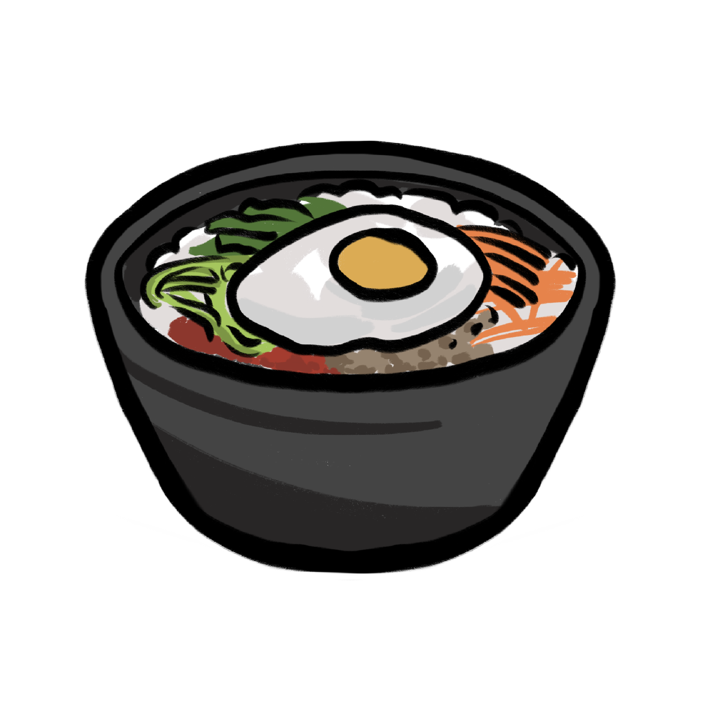

Ingredients
- Lebanese cucumber1
- Sea salt3 tbsp
- Spinachn1
- Sesame oil1 tbsp
- Sesame seeds1 1/4 tbsp
- Bean sprouts65 g
- Sushi rice440g
- Vegetable oil1 1/2 tbsp
- Lean beef mince300 g
- Carrot2
- Egg4
- Chilli sauceany
- Miso soupany
Bibimbap(비빔밥) sometimes romanized as bi bim bap or bi bim bop, is a Korean rice dish.
The term bibim means "mixing" and bap is cooked rice. It is served as a bowl of warm white rice
topped with namul (sautéed or blanched seasoned vegetables) and gochujang (chili pepper paste).
Egg and sliced meat (usually beef) are common additions, stirred together thoroughly just before
eating.
How to cook:
| 1. | Place the cucumber and 1 teaspoon salt in a bowl. Add cold water to cover. Set aside for 20 minutes or until the cucumber softens slightly. Rinse and drain. |
| 2. | Combine the spinach, 2 teaspoons sesame oil, 1 teaspoon sesame seeds and 1 teaspoon of remaining salt in a bowl. Combine the bean sprouts and remaining sesame oil, sesame seeds and salt in a bowl. |
| 3. | Cook the rice following packet directions. Cover to keep warm. |
| 4. | Meanwhile, heat half the vegetable oil in a frying pan over medium heat. Cook the carrot, stirring, for 2-3 minutes or until just tender. Use a slotted spoon to transfer to a bowl. Add the mince to the pan. Cook, stirring to break up any lumps, for 10 minutes or until browned. Transfer to a bowl and cover with foil to keep warm. Wipe the pan clean with paper towel. |
| 5. | Heat remaining vegetable oil in the pan over medium heat. Crack the eggs into the pan and cook for 3 minutes or until cooked to your liking. |
| 6. | Divide the rice among serving bowls and arrange the mince and vegetables on top. Top with eggs. Serve with chilli sauce and miso soup. |